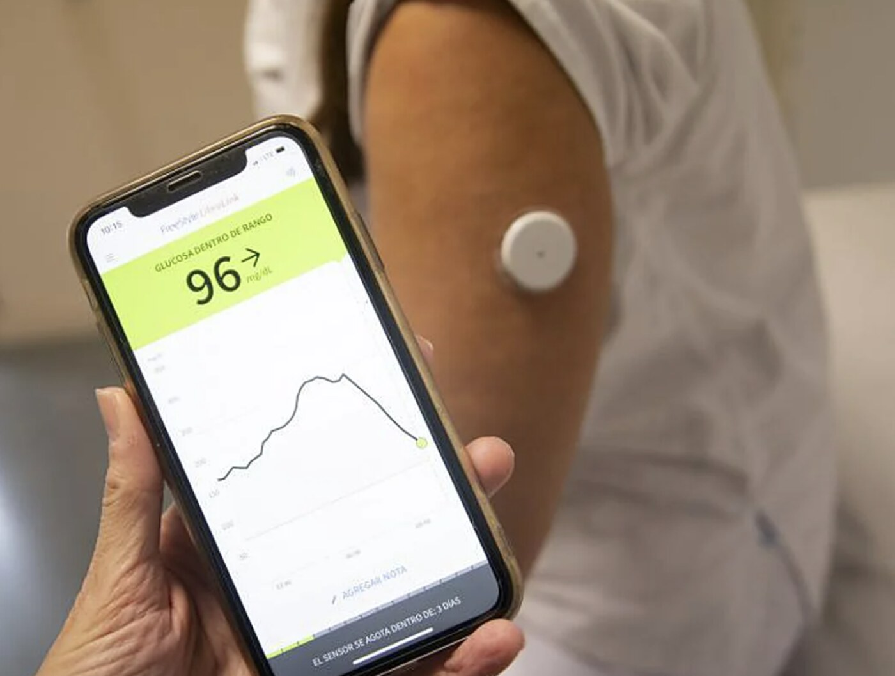
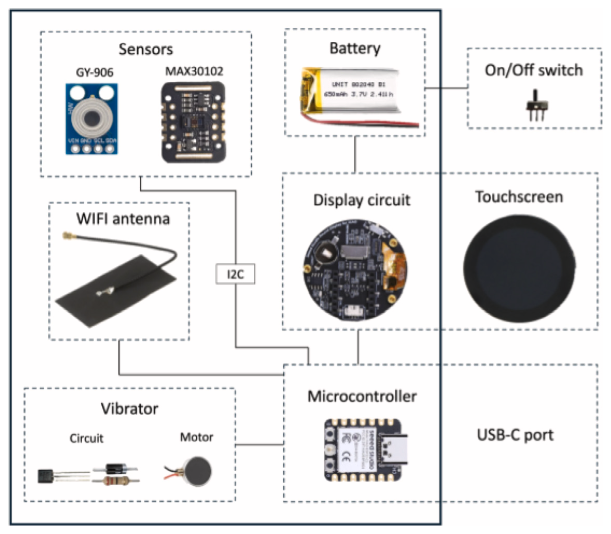

flowchart LR A[Sensores<br/>wearables, ambiente] --> B[Microcontrolador<br/>ESP32] B --> C[Conectividad<br/>WiFi · BLE · MQTT] C --> D[Plataforma IoT<br/>ThingsBoard] D --> E[Visualización<br/>y actuación]
Medir, interpretar y actuar sobre el ambiente construido
14 de octubre de 2026

FreeStyle Libre (Abbott): parche en el brazo, lectura en el teléfono
Datos
Energía

flowchart LR A[Sensores<br/>wearables, ambiente] --> B[Microcontrolador<br/>ESP32] B --> C[Conectividad<br/>WiFi · BLE · MQTT] C --> D[Plataforma IoT<br/>ThingsBoard] D --> E[Visualización<br/>y actuación]
Lo que publica el smartwatch, en tiempo real
| Escalón | Energía | Ejemplo |
|---|---|---|
| En el sensor | µA | IMU ST LSM6DSOX: árbol de decisión integrado; clasificar actividad cuesta ~13 µA |
| En el MCU | mW | ESP32-S3: instrucciones vectoriales + ESP-DL / TFLite Micro (INT8) |
| Con microNPU | mJ → µJ | Arm Ethos-U55: MobileNetV2 de 624 a 8 ms y de 228 a 3 mJ; MAX78000: 251 µJ por palabra clave |
| En el SoC del reloj | — | Apple S9: Neural Engine, Siri procesada en el dispositivo |
| En el gateway / laptop | W | LLMs locales y agentes (nuestra demo) |
Cada eslabón hace lo mínimo necesario y pasa al siguiente solo lo que importa.
Formas de integrarlo:
led.py las herramientas son funciones de Python: el cliente de Ollama convierte el docstring y los type hints en el esquema que ve el modelocolor_led(255, 140, 40) → placa: OK pin=48 on=1 rgb=255,140,40 → LLM: “Puse el LED en un tono cálido”esp32LLMflowchart LR U[Usuario<br/>texto en español] --> P[led.py en la Mac<br/>5 herramientas] P <-- "chat + tools<br/>tool_call" --> O[Ollama<br/>LLM local] P <-- "USB serial<br/>comando → OK / ERR" --> F[ESP32-S3<br/>led_control.ino] F --> L[LED RGB<br/>GPIO 48]
led-wifi.py: la placa crea su propia red y escucha en TCP 2323)ON, OFF, RGB r g b, BLINK n ms, PIN p, STATUS; cada uno contesta OK … o ERR …🔴 “Está muy oscuro, pon una luz cálida y parpadea dos veces”
barista.py, stories.py):| barista | tinystories | |
|---|---|---|
| parámetros | 8.9 M | 28.9 M |
| en flash (int4) | 4.6 MB | 14.9 MB |
| hace | responde preguntas sobre espresso | escribe un cuento al arrancar |
| velocidad | ~14 piezas/s | ~5.5 tok/s |
Hay producción académica real:
…pero concentrada en prototipos ESP32 + MQTT de signos vitales. Nichos abiertos:
Wearables, IoT y agentes de IA — IER-UNAM